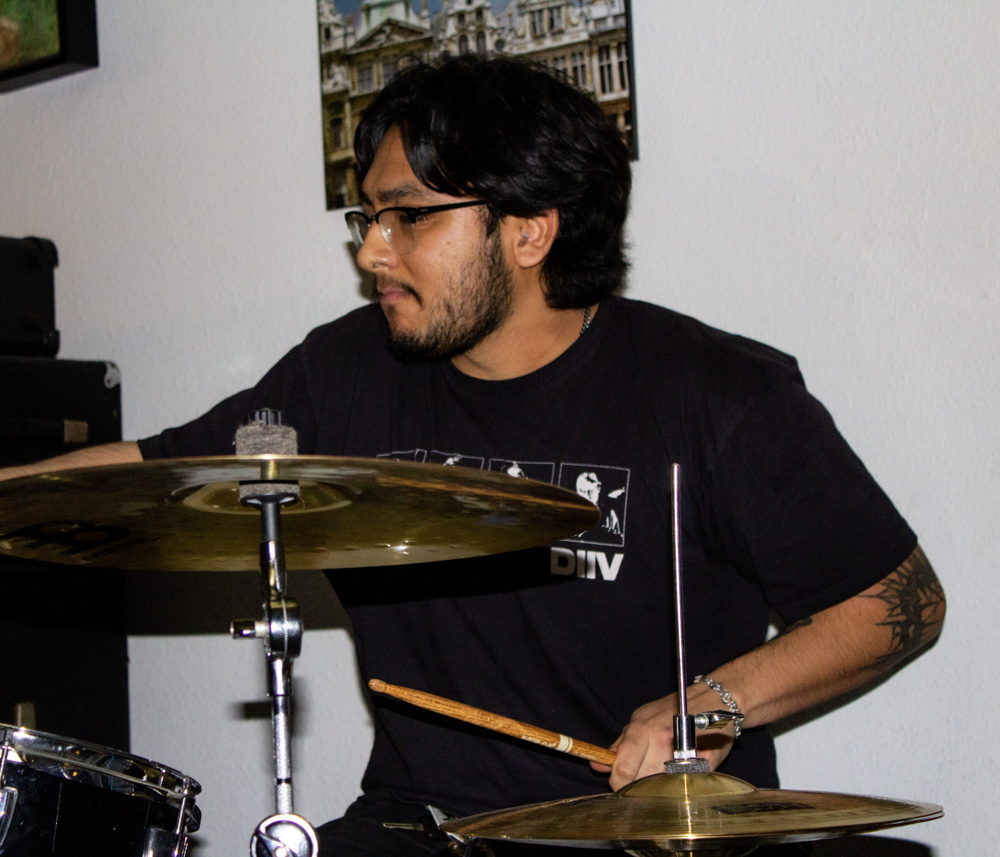
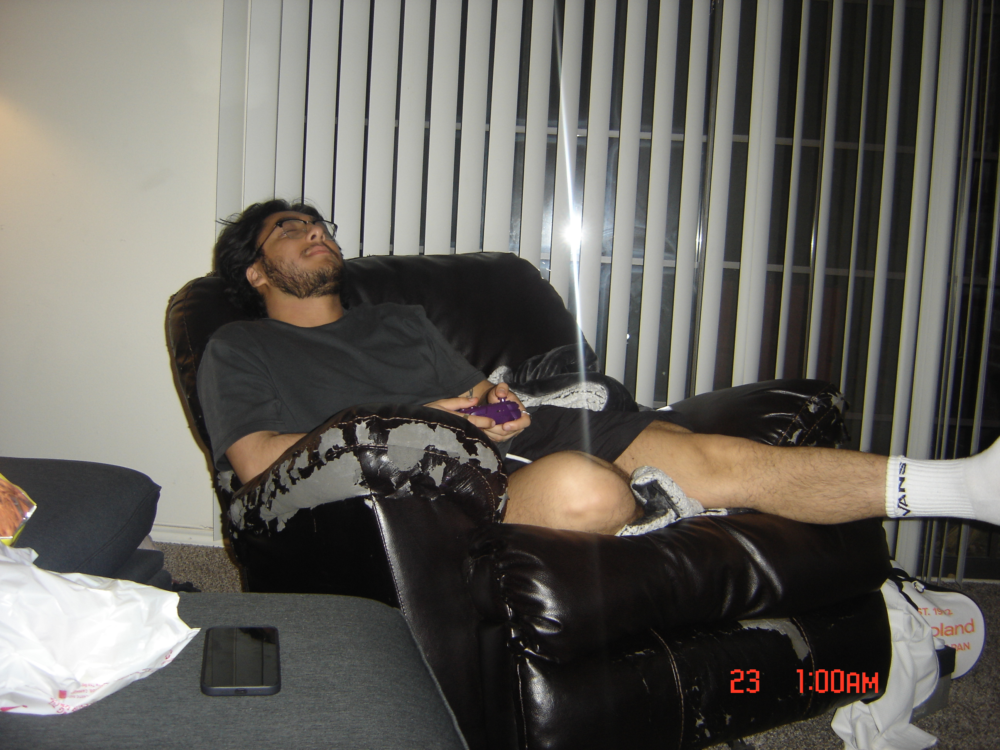
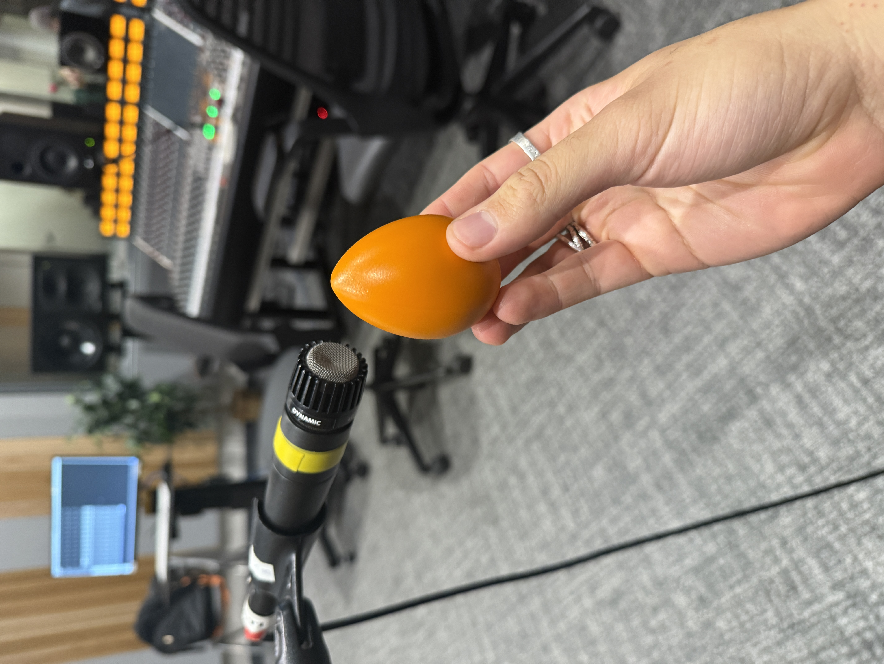
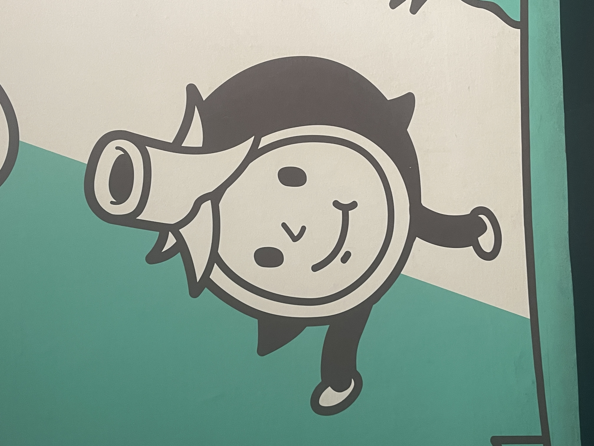

About Me


Growing up, I was a nerd. Straight-A student, glued to the TV playing video games, falling asleep to math and science videos. Honestly, I still do fall asleep to math and science videos sometimes. I was always drawn to technology, taking apart laptops and jailbreaking iPhones just to see what was possible. It made sense that I ended up studying electrical engineering in college.
In 5th grade I signed up for orchestra and picked up the viola. From that moment I knew music was something that I wouldn't let go. I became a band kid soon after in middle school, originally playing French Horn, which I was terrible at, then percussion, which clicked immediately. Drumline eventually took over my life, and I mean that in the best way. I competed through scholastic circuits and worked my way up to independent organizations in college, always spending countless hours in practice rooms recording myself. Then COVID hit and the music world took a pause, so I took it as a signal to move on and I put down my sticks.
A few years without music passed by and I was going crazy, though I didn't connect the dots right away. I was out of college, working a corporate job I hated. I bought a guitar and some pedals with my big boy paycheck. Then a drum kit. Then a bass. Before long I was re-enrolled in school for audio technology. Getting back to playing brought me back to myself. Now I've played in a few bands, am trying to build toward a career in production and audio engineering, and I've put together a small studio in my apartment.
I've been doing music for over 15 years now. It's how I express myself and what keeps me sane.
Nowadays, I work as a technical writer until AI takes my job. I'm taking Spanish lessons with a teacher in Mexico, we've become good friends and we'll gossip weekly. I live in South Austin at the moment. I've been to Europe twice, once solo and once with my best friend, and got sent to Taiwan on a work trip at my last job. I try to go to the gym almost every day and I hate it. My mornings start with tea or coffee and sitting in silence until I'm functional. I'm trying to unplug from my phone and read as much as I can. I'm a regular at the taco stand nearby, the cashier gives me book and comic recommendations. I'm a Spurs fan, GSG. I've seen 400+ artists live. I enjoy perusing at thrift, book, and record stores nearby. I enjoy a solid dive bar. And lately I've been getting more into clothing, furniture, and movies.
I don't find myself all that interesting, but I'm always happy to talk if anyone's curious.

I've been playing music for 15+ years, most of that time as a percussionist across both classical and marching ensembles. These days I spend my time on drum set, bass, producing, and occasionally picking up guitar or piano.
As I've moved toward producing, audio engineering, and media work, I've built up hands-on experience with a range of tools, both hardware and software listed below:
- Ableton Live
- Pro Tools
- Audacity
- Reaper
- Kilohearts Phaseplant
- VCV Rack
- AIR Music Technology Plug-ins
- Valhalla DSP Plug-ins
- Korg, Yamaha, Novation, and T.C. Electronic Hardware
- Neve Studio Consoles
- DaVinci Resolve
- Adobe Premiere
- Inkscape
- OBS
In addition to the tools listed above, a full list of my current gear can be found here:
My Gear
- Hardware Synths
- Korg Triton Rack Unit
- Novation Bass Station II
- Yamaha AN200
- Yamaha PSR-36
- Yamaha SY77
- Rack Gear
- Behringer Ultrapatch Pro PX3000
- Behringer UMC1820 Audio Interface
- T.C. Electronic G-Force Multi-Effects Processor
- Amps and Cabs
- Fender Deluxe Reverb
- Sunn Coliseum-300
- Ampeg 8x10
- Acoustic Instruments
- 2002 Fender Japan Jazz Bass
- 2021 Fender Jazzmaster
- 2022 Squire Stratocaster
- Sigma Acoustic Guitar
- Drum Gear
- DW 5000 Series Double Bass Drum Pedal
- Ludwig Supraphonix 14 x 6.5 Snare Drum
- I can't remember my cymbals off the top of my head, they're in my car rn.
- Other Gear
- Akai MPK249 MIDI Keyboard
- Boss DD-8 Delay Pedal
- Boss TU-3 Chromatic Tuner Pedal
- Chase Bliss Generation Loss MkII Pedal
- EarthQuakerDevices Sunn Life Pedal
- Electro-Harmonix Freeze Pedal
- Electro-Harmonix Russian Big Muff Pedal
- Mackie ProFX16v3 16-Channel Mixer
- Otari MX5050 BII-2 Reel-to-Reel
- Roland Re-20 Pedal
- SansAmp GT2 Pedal
- Sennheiser HD 280 Pro Headphones
- Sherman Filterbank
- Tascam Portastudio 488 Mk II
- T.C. Electronic Hall of Fame 2 Reverb Pedal
- Maestro Echoplex EP-3
Mainly for memory sake, a brief summary of my music 'career' can be found below:
History
- 2026
- Playing bass for Of Grace
- Drummed for tethered to doubt
- Fifth, sixth, and seventh semesters at ACC. I began taking music composition courses as I gained interest in composing for post-production work
- 2025
- Album Release: Topology - Of a Slow Collapse
- Drummed for: tethered to doubt and Mr. Kat
- Second, third, and fourth semesters of audio engineering at ACC
- 2024
- Album Release: disavowal - tethered to doubt
- Played bass for: tethered to doubt
- First semester of audio engineering at ACC
- 2020
- Auditioned and performed with Violet Crown Independent, an independent percussion organization formerly based in San Antonio
- Received DCI contract for Madison Scouts, don't think this one counts much as I hadn't even attended a spring camp when Covid struck
- Went on music hiatus
- 2019
- Performed in UTSA's drumline
- Pre-2019
- High School Percussionist
- Received John Phillip Sousa award
- Founding member of Sun City Indoor, an independent percussion ensemble
- Founding member of Chapin High Indoor, a scholastic percussion ensemble
- Qualified to perform at the Texas State Solo & Ensemble competition every year of high school
- 2010
- I signed up for orchestra in 5th grade and started playing music

I studied Electrical Engineering at UTSA, graduating in 2022 with a concentration in Electronic Materials and Devices. My coursework covered the usual EE fundamentals like circuit analysis, control theory, programming, alongside more specialized topics like nanomaterials, semiconductor physics, and analog circuit design. I always gravitated toward analog over digital. It was more intuitive and easier for me to visualize, though I still worked through digital courses like VLSI and Digital Signal Processing.
Outside the classroom, I spent my summers interning in Dr. Ahn's Nanoelectronics Lab at UTSA, where I also sat in on graduate-level courses in quantum physics and spintronics.
My first role out of school was as an Applications Engineer at Cirrus Logic, working on audio and haptic amplifiers for consumer electronics. A rotation program gave me exposure to different roles across the company, including a stretch in technical writing, which ended up sticking. I currently work as a Senior Technical Writer at Aristocrat, documenting GDKs using a docs-as-code approach.
Below are some of the tools and hardware I've picked up working in the tech sector:
Skills
- Hardware
- Oscilloscope, Power Supply Unit, Accelerometer, Audio Analyzer, Soldering Iron, Thermostream, Digital Multimeter
- Applications and Programming Languages
- Adobe FrameMaker, AutoCAD, Mentor PADS Schematic and Layout Design, Visual Studio Code, Visual Studio, Unity, Inkscape, OBS
- C/C++, C#, XML, YAML, JSON, MATLAB, Python, MarkDown, HTML, CSS
- Other
- DocFX, Git, SVN, Perforce, Jira, Confluence, Bitbucket, GitHub, GitLabs, Zoom, Slack, Microsoft Office
A brief work history is provided below. Further details regarding responsibilites and projects can be provided upon request.
Work History
- Aristocrat - Senior Technical Writer
- February 2025 to Current
- Cirrus Logic - Applications Engineer II
- March 2024 to January 2025
- Cirrus Logic - Applications Engineer
- July 2022 to March 2024
- UTSA Nanoelectronics Lab - Undergraduate Researcher
- August 2021 to May 2022
- NXP Semiconductors - Yield Enhancement Engineer Intern
- May 2021 to December 2021
- UTSA Student Success Center - Engineering Lab Tutor
- January 2021 to May 2021
- El Paso Electric - Transmission/Substation Engineer Intern
- May 2020 to August 2020
Lastly, my academic accomplishments and awards can be found below. All of these are related to my electrical engineering studies at UTSA.
Academic Accolades
- GPA: 3.94
- Summa Cum Laude
- Honors College Graduate
- Awards Received:
- Undergraduate Research Scholar - 2021, 2022
- Outstanding ECE Undergraduate - 2021
- San Antonio Pipeliners Scholar - 2021
- Mary Pat and Louis Stumberg Endowed Scholar - 2021
- Phi Theta Kappa Scholar - 2019, 2020
- President's List - 2018, 2019, 2020, 2021, 2022
- Professional Affiliations
- Institute of Electrical and Electronic Engineers (IEEE) Member
- Eta Kappa Nu (HKN) Engineering Honor Society